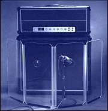

HTML100 Class Projects
 Assignment 3: First stylesheet, gh-pages hosting
Assignment 3: First stylesheet, gh-pages hosting
Assignment 5: Portfolio with Web Fonts
Assignment 6: REI product template float demo
Assignment 7: My team's Archery site, initial HTML
Assignment 8: My own version of Archery site
 Assignment 9: Bootstrap Demo Page
Assignment 10: In-class presentation of my team's Archery site and of my own version of the site.
HTML200 Class Projects
Assignment 1: Single-page website with form
Assignment 3: e-commerce site: create basic layout of product grid
Assignment 4: Treasure seeking game.
Randomly places user, treasure, and a chute-to-starting-point in a 4x4 grid.
Shows current distance from the treasure.
Because this game relies on the dev console and starts with dialog boxes, to run:
Open new tab in browser, show dev console, then paste URL: https://mikeshhoffman.github.io/adventure-time/
Assignment 5: e-commerce site: Variable image sizes via srcset
Assignment 8: e-commerce site: Write JavaScript function to add/remove items from cart
In-class practice for lecture 8: Magic 8 Ball for array practice (show dev console)
Assignment 9: e-commerce site: audience analysis, testing, and perf writeup
Week 10 in-class practice: dynamic HTML (Repo) |
Rendered
HTML300 Class Projects
Week 1 in-class practice: debugging practice (repo) |
Rendered
Assignment 1: Research & Plan; Proposal for responsive redesign of http://floridaenergy.ufl.edu | README
Assignment 2: Analytics, ES6; add social media links (for energy site redesign) | README
Assignment 3: Design Plan, Finish Base HTML (for energy site redesign) | README
Assignment 4 - Styling with Sass (for energy site redesign) | README
Assignment 5: Technical Feasibility Review; for a given set of mockups (not shown here), assess:
- Will it take a little, lot, or absurd amount of work to build this feature/design?
- Are there other options for similar result with less work?
- Is it a good development choice? Do you have any concerns with it?
- What would be the first dev step you would try when building? Ex: “Add border radius to curve the edges” or “Something with SVGs”.
(My answers are in the private UW Canvas site.)
Assignment 6: Prep for Google Charts library (for energy site redesign) Choose two chart types (Bar, Pie, Bubble, etc). For each one, write a description of how data should be formatted for that particular chart, then give sample data that would work for it. (My answers are in the private UW Canvas site.)
Assignment 7: Add Google Charts, with static data (for energy site redesign) Add two charts to the redesign project, using provided data. One chart shows annual renewable energy production in Florida, and the other shows annual total electricity consumption in Florida. Add a note to the project's README file linking to the charting library used, and explaining why you chose the chart types you did.
Assignment 8: Javascript Framework (Vue.js) Add the Vue.js framework to the energy site redesign project. It should be used, at a minimum, to display shared modules of content as a template so that HTML is not duplicated.
Assignment 9: Web API Queries
For each of the questions below, research the Meetup API documentation to determine the appropriate API call(s) you'd need to make to determine an answer.
Then, using the Meetup API console, construct and try out the relevant API requests.
Turn in the Request URLs.
- Write an API Request URL to find 4 recommended upcoming events in Boston, MA.
- Write an API Request URL to determine how many people are members of the SeattleJS group.
- Write an API Request URL to get information on which groups you (the logged in user) belong to.
- Write an API Request URL to find five potential venues within 15 miles of Seattle, WA that have "Swedish" in their names.
(My answers are in the private UW Canvas site.)
Assignment 10: Populate Google Charts with data from API calls In the energy site redesign project, populate both charts with data sourced from US Energy Information Administration web API, instead of from static data. Update the project's README file with links to API's documentation. Remove all static data from your codebase.